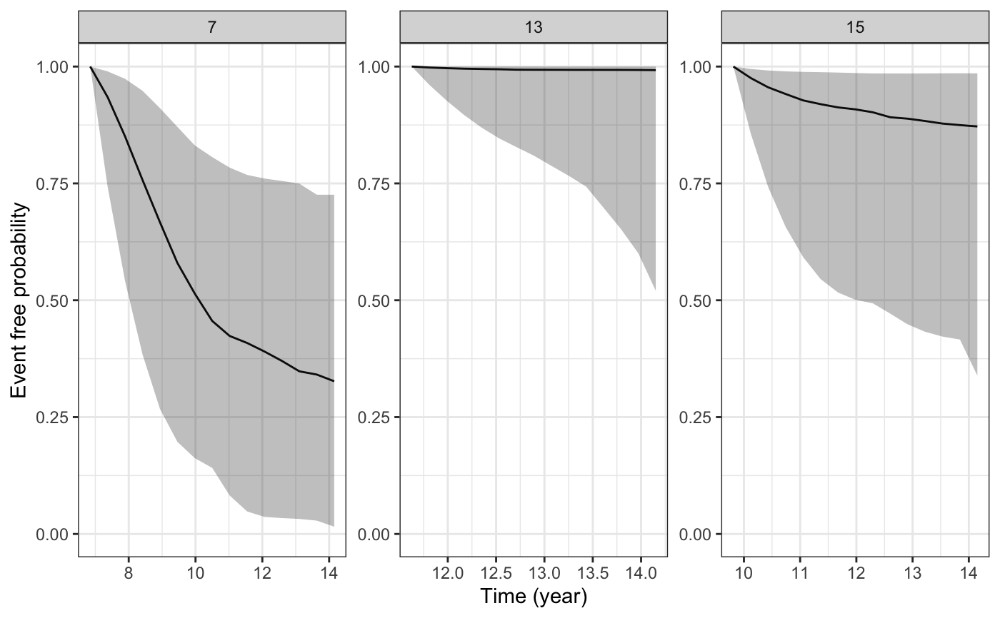
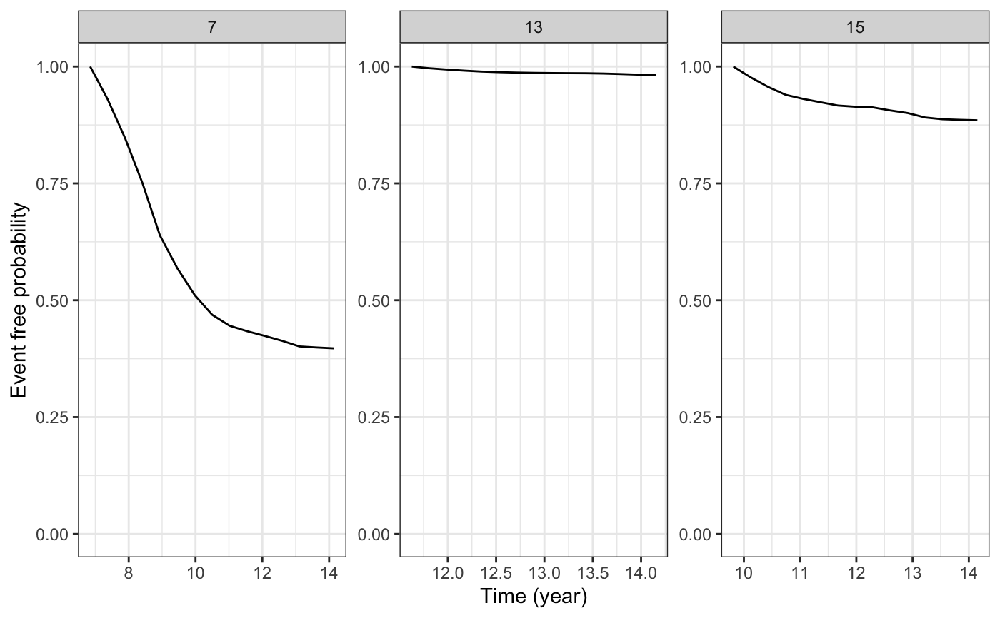

Plot the estimated subject-specific or marginal survival function
Source:R/posterior_survfit.R
plot.survfit.stanjm.RdThis generic plot method for survfit.stanjm objects will
plot the estimated subject-specific or marginal survival function
using the data frame returned by a call to posterior_survfit.
The call to posterior_survfit should ideally have included an
"extrapolation" of the survival function, obtained by setting the
extrapolate argument to TRUE.
The plot_stack_jm function takes arguments containing the plots of the estimated
subject-specific longitudinal trajectory (or trajectories if a multivariate
joint model was estimated) and the plot of the estimated subject-specific
survival function and combines them into a single figure. This is most
easily understood by running the Examples below.
Arguments
- x
A data frame and object of class
survfit.stanjmreturned by a call to the functionposterior_survfit. The object contains point estimates and uncertainty interval limits for estimated values of the survival function.- ids
An optional vector providing a subset of subject IDs for whom the predicted curves should be plotted.
- limits
A quoted character string specifying the type of limits to include in the plot. Can be one of:
"ci"for the Bayesian posterior uncertainty interval for the estimated survival probability (often known as a credible interval); or"none"for no interval limits.- xlab, ylab
An optional axis label passed to
labs.- facet_scales
A character string passed to the
scalesargument offacet_wrapwhen plotting the longitudinal trajectory for more than one individual.- ci_geom_args
Optional arguments passed to
geom_ribbonand used to control features of the plotted interval limits. They should be supplied as a named list.- ...
Optional arguments passed to
geom_lineand used to control features of the plotted survival function.- yplot
An object of class
plot.predict.stanjm, returned by a call to the genericplotmethod for objects of classpredict.stanjm. If there is more than one longitudinal outcome, then a list of such objects can be provided.- survplot
An object of class
plot.survfit.stanjm, returned by a call to the genericplotmethod for objects of classsurvfit.stanjm.
Value
The plot method returns a ggplot object, also of class
plot.survfit.stanjm. This object can be further customised using the
ggplot2 package. It can also be passed to the function
plot_stack_jm.
plot_stack_jm returns an object of class
bayesplot_grid that includes plots of the
estimated subject-specific longitudinal trajectories stacked on top of the
associated subject-specific survival curve.
See also
posterior_survfit, plot_stack_jm,
posterior_traj, plot.predict.stanjm
plot.predict.stanjm, plot.survfit.stanjm,
posterior_predict, posterior_survfit
Examples
if (.Platform$OS.type != "windows" || .Platform$r_arch != "i386") {
# \donttest{
# Run example model if not already loaded
if (!exists("example_jm")) example(example_jm)
# Obtain subject-specific conditional survival probabilities
# for all individuals in the estimation dataset.
ps1 <- posterior_survfit(example_jm, extrapolate = TRUE)
# We then plot the conditional survival probabilities for
# a subset of individuals
plot(ps1, ids = c(7,13,15))
# We can change or add attributes to the plot
plot(ps1, ids = c(7,13,15), limits = "none")
plot(ps1, ids = c(7,13,15), xlab = "Follow up time")
plot(ps1, ids = c(7,13,15), ci_geom_args = list(fill = "red"),
color = "blue", linetype = 2)
plot(ps1, ids = c(7,13,15), facet_scales = "fixed")
# Since the returned plot is also a ggplot object, we can
# modify some of its attributes after it has been returned
plot1 <- plot(ps1, ids = c(7,13,15))
plot1 +
ggplot2::theme(strip.background = ggplot2::element_blank()) +
ggplot2::coord_cartesian(xlim = c(0, 15)) +
ggplot2::labs(title = "Some plotted survival functions")
# We can also combine the plot(s) of the estimated
# subject-specific survival functions, with plot(s)
# of the estimated longitudinal trajectories for the
# same individuals
ps1 <- posterior_survfit(example_jm, ids = c(7,13,15))
pt1 <- posterior_traj(example_jm, , ids = c(7,13,15))
plot_surv <- plot(ps1)
plot_traj <- plot(pt1, vline = TRUE, plot_observed = TRUE)
plot_stack_jm(plot_traj, plot_surv)
# Lastly, let us plot the standardised survival function
# based on all individuals in our estimation dataset
ps2 <- posterior_survfit(example_jm, standardise = TRUE, times = 0,
control = list(epoints = 20))
plot(ps2)
# }
}
#> Coordinate system already present.
#> ℹ Adding new coordinate system, which will replace the existing one.
#> `geom_smooth()` using formula = 'y ~ x'
#> `geom_smooth()` using formula = 'y ~ x'
#> `geom_smooth()` using formula = 'y ~ x'
#> `geom_smooth()` using formula = 'y ~ x'

if (.Platform$OS.type != "windows" || .Platform$r_arch != "i386") {
# \donttest{
if (!exists("example_jm")) example(example_jm)
ps1 <- posterior_survfit(example_jm, ids = c(7,13,15))
pt1 <- posterior_traj(example_jm, ids = c(7,13,15), extrapolate = TRUE)
plot_surv <- plot(ps1)
plot_traj <- plot(pt1, vline = TRUE, plot_observed = TRUE)
plot_stack_jm(plot_traj, plot_surv)
# }
}
#> `geom_smooth()` using formula = 'y ~ x'
#> `geom_smooth()` using formula = 'y ~ x'
#> `geom_smooth()` using formula = 'y ~ x'
#> `geom_smooth()` using formula = 'y ~ x'
